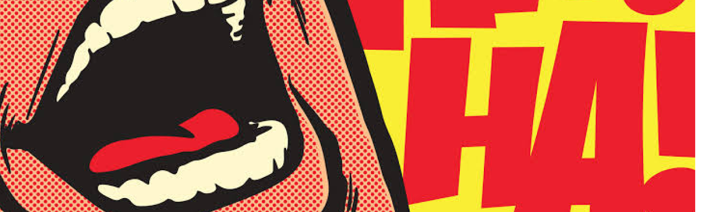
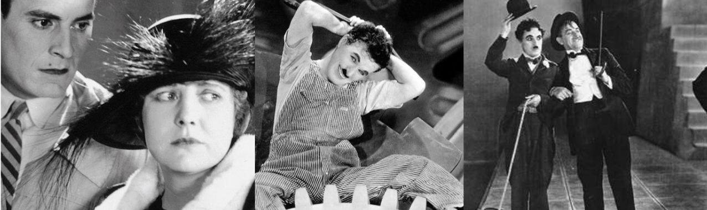

Origens
É um termo difícil de esclarecer suas origens, afinal,está presente em todas as artes e principalmente em nossas vidas, e desde sempre.
Mas assim como tudo, existe um começo. A origem da comédia remete diretamente com o Teatro e a Tragédia.
O ser humano possui um instinto natural inato. O teatro sempre existiu. O instinto de transfiguração ou teatralização abarca o desejo de ser diferente, de realizar algo diferente ou de criar um ambiente que fuja do cotidiano.
Historicamente, a origem do teatro remonta às festividades do deus Dioniso na Grécia Antiga, que traziam alternadamente momentos de tristeza e de alegria.
Dionísio ou Baco, filho de Júpiter e de Semele, era o deus da uva e do vinho. Uma vez por ano, por ocasião das vindimas, prestava-se uma homenagem a ele.

Ao som de flautas, as bacantes e os sátiros (dançarinos que imitavam bodes) dançavam em sua honra. Com o tempo, organizaram-se procissões tendo à frente jovens que cantavam o ditirambo, girando em torno do altar desse deus.
Em 487 A.C. Peças de teatrais de comédia começaram a ser realizadas no Dionysia, um grande festival em Atenas em homenagem a Dionísio. As peças cômicas eram encenadas depois de duas ou três peças trágicas para aliviar o público.
Essas criaturas muito defeituosas é apresentada de alguma forma falha e extremamente amável, sendo um tolo adorável, personagens idiotas pelo óbvio, fazendo ações diferentes do cotidiano, mas mesmo assim, um charme está presente neles,aceitamos eles pelo o que eles são.
Nos Cinemas
Junto ao drama, a comédia nos cinemas é um dos mais importantes gêneros da atualidade. O filme cômico, que se caracteriza pela inclusão de risadas, pilhérias ou brincadeiras, tanto visuais como verbais, começou sua existência praticamente no início desta arte.

Desde o começo, criaram-se filmes em que se mostravam imagens que alegravam ou faziam rir o espectador, ainda que fosse sem o acompanhamento do som. Nestas comédias, utilizavam-se das perseguições, dos golpes, das quedas, das surpresas dos personagens, para conseguir a hilaridade do público.
A Comédia Muda
A comédia muda teve origem nas ruas, no café concerto, e principalmente no circo. Os fatores externos, e não propriamente os personagem, eram os desencadeadores das situações inusitadas e sem sentido, dando graça aos instantes, sem qualquer preocupação na época.
Era algo novo na época, afinal, diferente dos teatros o cinema tinha mais opções e camadas de criações de cenas, aperfeiçoando a arte da comédia para outros patamares e principalmente para diferentes gostos.
O Pai da Comédia Cinematográfica
É impossível falar sobre comédia nos cinemas sem mencionar Charles Chaplin, a entrada dele nesse ramo gerou mudanças (às vezes polêmicas mas muito necessitadas) no universo cômico.
Mas por que mudança era algo necessitado?
Em suas origens, a comédia era uma forma de agradar plateias,reis e rainhas, uma simples forma de passar o tempo e esquecer os problemas, Chaplin inovou, trazendo as críticas engraçadas (ou comédia em forma de manifestação), filmes como Modern Times (“Tempos Modernos”) de 1936, A Woman of Paris (“Casamento ou Luxo”) de 1923 e City Lights (“Luzes da Cidade”) de 1931 são exemplos de comédias em forma de críticas, trazendo temas como trabalho alienado, padrões sociais e outros podres obscuros da sociedade de um jeito engraçado e inovador para época.

A chegada do som
Chaplin tenta se adaptar com The Great Dictator (“O Grande Ditador”), em 1940, seu primeiro filme sonoro, mas após essas mudanças sua receptividade já não foi a mesma.
Com o som, a comédia muda ficou de lado e ficou no banco de trás do género, mas mesmo assim, não deixa de ser um pass o evolutivo e importante.